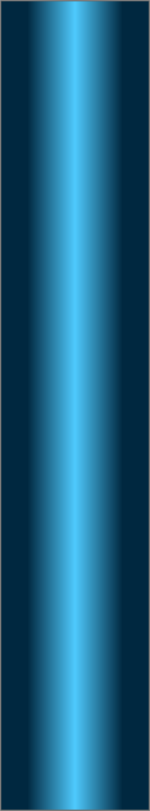
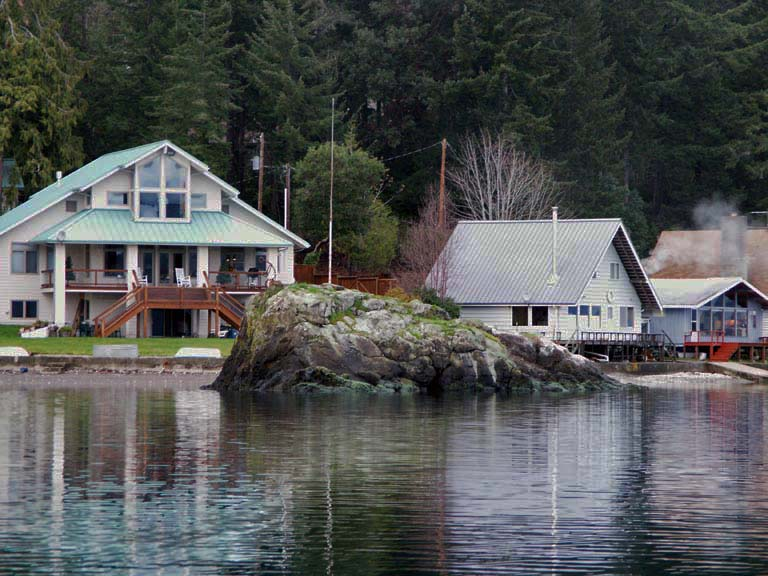
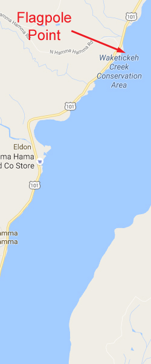
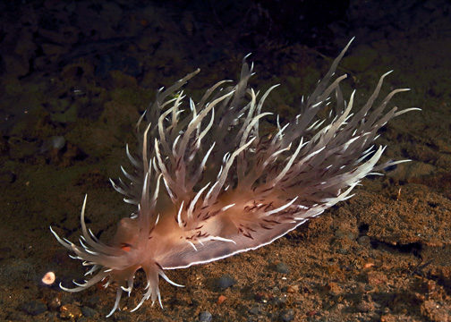

Flagpole Point
Topography: Cascading rocky walls and boulder fields located on a moderate slope.
Hood Canal marine life rating: 5
Hood Canal structure rating: 5
Diving depth: 90-115 feet
Highlight: Cloud sponges! Incredible variety of marine life including wolf eels, giant Pacific octopus, spotfin sculpins, and sea whips.
Skill level: Advanced
GPS coordinates: N47° 33.829’ W123° 00.843’
Access by boat: Flagpole Point is located on the west side of Hood Canal, south of both Mike’s Beach Resort and Triton Head. The point is really just a prominent rocky outcropping that is punctuated with (you guessed it) a lone flagpole. There are several nearby private residences.
As of July 2016, there is a dive site marker buoy at this site which makes finding the reef easy. If for some reason the market buoy is absent, you will need a little patience and a depth sounder to find the reef. The prominent wall highlighting this site runs northeast-southwest and is tricky to pick up with a depth sounder while cruising perpendicular to shore. I find the wall by following a course of 150º from the flag pole and anchoring in about 40-50 feet of water on the "knuckle" that rises slightly before the wall.
Shore access: Although I have never used the shore access for this dive, paid shore access is available from the north side of the side. Please see Mike's Beach Resort for detail and directions.
Dive profile: This site offers a moderate sized walls and extensive boulders fields to explore, along with some smaller walls at deeper depths. The reef starts about 50-75 yards from the rock outcropping on the shore. The dive site marker buoy anchor line will put you smack-dab on top of the knuckle just above the wall. I normally descend the south side of the wall first, then work my way following the structure to the north.
The arching main wall generally runs in a northeast-southwest direction. The top of the wall starts at about 60 feet and drops to 90 feet before giving way to a small shelf. The shelf, in turn, gives way to a smaller wall that drops from about 95 to 120 feet. The soft substrate continues to slope away at a moderate pace from the base of the deeper wall. Further to the north is yet another small wall at about the same depth.
Above the main wall are boulders that form a mound. It is easy to get disoriented on this mound as depths are deeper in all directions surrounding it. I follow a compass heading of 330 degrees from this mound when heading back to the shore. With some luck, I end up doing my safety stop in the shallows by the rock outcropping exploring a series of small rocky walls.
Like all sites in the Hood Canal area, visibility often varies greatly with depth. A murky fresh water layer typically occupies the top of the water column. The top 10-30 feet of salt water is occasionally laced with plankton, causing visibility to be downright awful (5 feet or less). By the time I reach a depth of 50 feet, the visibility usually improves markedly. A typical scenario in summer is five feet of visibility to about 40 feet, and 40 feet of visibility at 100 feet. All the structure at this site is covered in typical Hood Canal silt. Keeping off the bottom is paramount to maintaining good visibility.
My preferred gas mix: EAN 31
Current observations: Most of Hood Canal south of Seabeck is not dramatically affected by tidal current. I normally dive this area when tidal exchanges are large and only encounter mild current.
A halocline (freshwater/saltwater barrier) usually exists in the canal. The fresh water layer can move in a different direction from the salt water layer. I have noted times when the fresh water flows north while the salt water underneath flows south during a flooding tide.
Wind-driven surface current can affect this area. The wind can really whip through Hood Canal. I only dive this site with a live boat when the wind is blowing.
Boat Launch:
Seabeck ramp (east side of Hood Canal). Approximately 11 miles from the dive site. This ramp requires a Washington Department of Fish and Wildlife and/or WA Discover Pass. It also offers no dock and a very shallow ramp - I only use this ramp at high tide.
There is also a make-shift ramp - well, really a sloping gravel bank - on the north shore of Dewatto Bay at the old cinder block house. I have used this as a launch several times as it is very convenient and closer than Seabeck. However Dewatto Bay is very shallow and I only use this "ramp" when the tide is +6 feet. Proper planning is critical.
Triton Cove on the west side of the canal offers an excellent ramp, but it is a long drive from Seattle.
Facilities: None
Hazards:
Depth: The interesting part of this dive begins at about 60 feet and runs down to the limits of advanced recreational scuba diving.
Free ascent: A free ascent from depths of over 60 feet is a possibility if no-deco time or air supply runs low before reaching the shallows.
Exposure: This site is exposed to wind and weather and susceptible to rapidly deteriorating surface conditions.
Marine Life: The marine life at this site is simply wonderful. This is one of only a few sites in Washington where divers can observe cloud sponges within recreational diving depths. The cloud sponges are relatively small (usually 3’ diameter or less) and not in the best of health as indicated by the dark brown patches and decay on many of the sponges. Numerous crabs, squat lobsters, and small fish take refuge in these sponges and make for marvelous photo opportunities. The cloud sponges reside near the main wall at depths greater than 80 feet.
The rocky structure that makes up this site provides excellent habitat for both giant Pacific octopus and wolfeels. I have had some fantastic encounters with octopus at this site, including one encounter where a large male lifted all its arms around its mantle simultaneously, exposing an army of white suckers. How did I know it was a male? It was mating with a female as it put on this unique display.
This is the only sites where I regularly find spotfin sculpins. These mid-sized sculpins boast a tall and wispy first dorsal ray and a black spot on the dorsal fin. I find spotfin sculpins on the deeper part of this reef.
Rockfish abound here, including very large vermilion rockfish and the occasional lone black and yellowtail rockfish. Puget Sound, quillback, and copper rockfish, lingcod of various sizes, kelp greenling, blackeye gobies, and painted greenling are all common.
Orange burrowing sea cucumbers, white sea cucumbers, yellow bryozoans, and a number of colorful anemones all add brilliant color to the reef. Several large boulders are encrusted with thousands of creamy-yellow zoanthids. Small fields of white sea whips reside in deeper water beyond the base of the reef. Legions of red gilled aeolids invade the surrounding soft substrate during certain times of the year.
Hood Canal marine life rating: 5
Hood Canal structure rating: 5
Diving depth: 90-115 feet
Highlight: Cloud sponges! Incredible variety of marine life including wolf eels, giant Pacific octopus, spotfin sculpins, and sea whips.
Skill level: Advanced
GPS coordinates: N47° 33.829’ W123° 00.843’
Access by boat: Flagpole Point is located on the west side of Hood Canal, south of both Mike’s Beach Resort and Triton Head. The point is really just a prominent rocky outcropping that is punctuated with (you guessed it) a lone flagpole. There are several nearby private residences.
As of July 2016, there is a dive site marker buoy at this site which makes finding the reef easy. If for some reason the market buoy is absent, you will need a little patience and a depth sounder to find the reef. The prominent wall highlighting this site runs northeast-southwest and is tricky to pick up with a depth sounder while cruising perpendicular to shore. I find the wall by following a course of 150º from the flag pole and anchoring in about 40-50 feet of water on the "knuckle" that rises slightly before the wall.
Shore access: Although I have never used the shore access for this dive, paid shore access is available from the north side of the side. Please see Mike's Beach Resort for detail and directions.
Dive profile: This site offers a moderate sized walls and extensive boulders fields to explore, along with some smaller walls at deeper depths. The reef starts about 50-75 yards from the rock outcropping on the shore. The dive site marker buoy anchor line will put you smack-dab on top of the knuckle just above the wall. I normally descend the south side of the wall first, then work my way following the structure to the north.
The arching main wall generally runs in a northeast-southwest direction. The top of the wall starts at about 60 feet and drops to 90 feet before giving way to a small shelf. The shelf, in turn, gives way to a smaller wall that drops from about 95 to 120 feet. The soft substrate continues to slope away at a moderate pace from the base of the deeper wall. Further to the north is yet another small wall at about the same depth.
Above the main wall are boulders that form a mound. It is easy to get disoriented on this mound as depths are deeper in all directions surrounding it. I follow a compass heading of 330 degrees from this mound when heading back to the shore. With some luck, I end up doing my safety stop in the shallows by the rock outcropping exploring a series of small rocky walls.
Like all sites in the Hood Canal area, visibility often varies greatly with depth. A murky fresh water layer typically occupies the top of the water column. The top 10-30 feet of salt water is occasionally laced with plankton, causing visibility to be downright awful (5 feet or less). By the time I reach a depth of 50 feet, the visibility usually improves markedly. A typical scenario in summer is five feet of visibility to about 40 feet, and 40 feet of visibility at 100 feet. All the structure at this site is covered in typical Hood Canal silt. Keeping off the bottom is paramount to maintaining good visibility.
My preferred gas mix: EAN 31
Current observations: Most of Hood Canal south of Seabeck is not dramatically affected by tidal current. I normally dive this area when tidal exchanges are large and only encounter mild current.
A halocline (freshwater/saltwater barrier) usually exists in the canal. The fresh water layer can move in a different direction from the salt water layer. I have noted times when the fresh water flows north while the salt water underneath flows south during a flooding tide.
Wind-driven surface current can affect this area. The wind can really whip through Hood Canal. I only dive this site with a live boat when the wind is blowing.
Boat Launch:
Seabeck ramp (east side of Hood Canal). Approximately 11 miles from the dive site. This ramp requires a Washington Department of Fish and Wildlife and/or WA Discover Pass. It also offers no dock and a very shallow ramp - I only use this ramp at high tide.
There is also a make-shift ramp - well, really a sloping gravel bank - on the north shore of Dewatto Bay at the old cinder block house. I have used this as a launch several times as it is very convenient and closer than Seabeck. However Dewatto Bay is very shallow and I only use this "ramp" when the tide is +6 feet. Proper planning is critical.
Triton Cove on the west side of the canal offers an excellent ramp, but it is a long drive from Seattle.
Facilities: None
Hazards:
Depth: The interesting part of this dive begins at about 60 feet and runs down to the limits of advanced recreational scuba diving.
Free ascent: A free ascent from depths of over 60 feet is a possibility if no-deco time or air supply runs low before reaching the shallows.
Exposure: This site is exposed to wind and weather and susceptible to rapidly deteriorating surface conditions.
Marine Life: The marine life at this site is simply wonderful. This is one of only a few sites in Washington where divers can observe cloud sponges within recreational diving depths. The cloud sponges are relatively small (usually 3’ diameter or less) and not in the best of health as indicated by the dark brown patches and decay on many of the sponges. Numerous crabs, squat lobsters, and small fish take refuge in these sponges and make for marvelous photo opportunities. The cloud sponges reside near the main wall at depths greater than 80 feet.
The rocky structure that makes up this site provides excellent habitat for both giant Pacific octopus and wolfeels. I have had some fantastic encounters with octopus at this site, including one encounter where a large male lifted all its arms around its mantle simultaneously, exposing an army of white suckers. How did I know it was a male? It was mating with a female as it put on this unique display.
This is the only sites where I regularly find spotfin sculpins. These mid-sized sculpins boast a tall and wispy first dorsal ray and a black spot on the dorsal fin. I find spotfin sculpins on the deeper part of this reef.
Rockfish abound here, including very large vermilion rockfish and the occasional lone black and yellowtail rockfish. Puget Sound, quillback, and copper rockfish, lingcod of various sizes, kelp greenling, blackeye gobies, and painted greenling are all common.
Orange burrowing sea cucumbers, white sea cucumbers, yellow bryozoans, and a number of colorful anemones all add brilliant color to the reef. Several large boulders are encrusted with thousands of creamy-yellow zoanthids. Small fields of white sea whips reside in deeper water beyond the base of the reef. Legions of red gilled aeolids invade the surrounding soft substrate during certain times of the year.



Giant Pacific Octopus
Zoanthids
Wolf Eel
Decorated Warbonnet
Underwater imagery from this site

Giant Nudibranch

Copper Rockfish/Zoanthids
Giant Pacific Octopus

Fried-Egg Jellyfish
Composite Photography From Flagpole Point